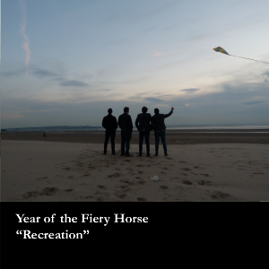

 <div class="tab-content">
          <div class="tab-pane active" id="home">

                    <div class="row">

                        

                        <div class="col-sm-8"  id="fp-left">

                            <!-- Posts go here -->
                            {% for post in site.posts %}
                              
                                <span class="post-meta">{{ post.date | date: "%b %-d, %Y" }}</span>

                                <h3>
                                  {{ post.title }}
                                </h3>
                                {{ post.content }}
                                <br><hr>
                                
                              
                            {% endfor %}

                        </div>


                        <div class="col-sm-4" id="fp-right">
                            <!-- <h4 class="gig-title text-center desktop-top-margin">New EP "Fl&acirc;neur"</h4>
                            <h4 class="gig-title text-center" style="color:white;">Available NOW via Bandcamp! <br><a href="http://yearofthefieryhorse.bandcamp.com" target="_blank" style="color:#E0930D">Get it here!</a></h4>

                             -->
                            <h4 class="gig-title text-center desktop-top-margin">New EP "Recreation"</h4>
                            <h4 class="gig-title text-center" style="color:white;">Available NOW via Bandcamp! <br><a href="https://yearofthefieryhorse.bandcamp.com/album/the-recreation" target="_blank" style="color:#E0930D">Get it here!</a></h4>

                            
                            <br>
                            <a class="twitter-timeline" href="https://twitter.com/YOTFH" data-widget-id="451096012581388288">Tweets by @YOTFH</a>
                            <script>
                                ! function(d, s, id) {
                                    var js, fjs = d.getElementsByTagName(s)[0],
                                        p = /^http:/.test(d.location) ? 'http' : 'https';
                                    if(!d.getElementById(id)) {
                                        js = d.createElement(s);
                                        js.id = id;
                                        js.src = p + "://platform.twitter.com/widgets.js";
                                        fjs.parentNode.insertBefore(js, fjs);
                                    }
                                }(document, "script", "twitter-wjs");
                            </script>
                        </div>

                    </div>

          
          </div>

            </div>
